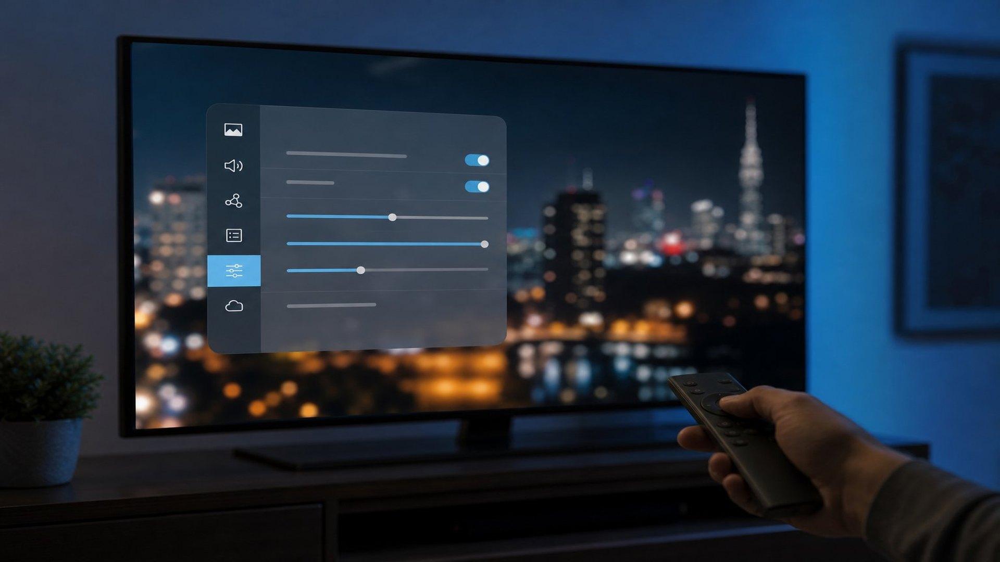
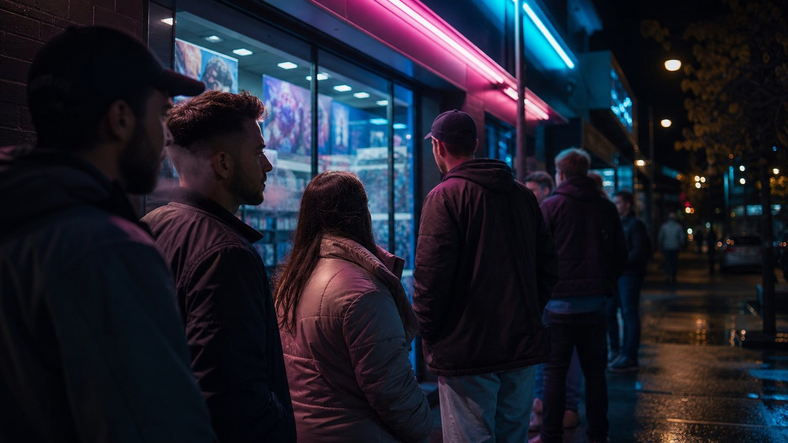

Le record égalé, rédaction par rédaction : ce que la critique adore, ce qu'elle reproche, et à quelle heure le jeu s'ouvre chez vous.
PRESSE · 18/11OFFICIEL
ILLUSTRATION IA · NON OFFICIEL
PRESSE · 18/11
Le verdict est tombé à 11:00 UTC
L'embargo a été levé le mercredi 18 novembre 2026 à 11:00 UTC — moins de vingt-quatre heures avant l'ouverture, et au moment même où le jeu se débloquait en Nouvelle-Zélande. En quelques minutes, Metacritic affichait 99 sur la version PS5, sans une seule critique mitigée. REV-17
99 · Metacritic
Sur 109 critiques PS5, environ 80 parfaites, aucune sous 90. La version Xbox affiche aussi 99, sur beaucoup moins de tests. REV-18
98–99 · OpenCritic
Moyenne des critiques entre 98 et 99 selon l'heure du relevé, 100 % de recommandations. REV-19
9/10 · la note la plus basse
TheSixthAxis. Dans cette première vague, un « mauvais » score pour GTA VI est un 9. REV-24
99 = Ocarina of Time, mais pas dans les mêmes conditions — le record de 1998 reposait sur 22 critiques. Celui-ci en compte plus de cent. C'est aussi le meilleur score de Rockstar, devant GTA IV (98), GTA V (97) et Red Dead Redemption 2 (97). REV-20
PRESSE · 18-19/11
99 sur Metacritic, et une déclaration rare de Rockstar
À la levée de l'embargo, le 18 novembre à 6 h (heure de l'Est), la note est montée à 99 sur la version PS5, sur 147 critiques toutes positives. Seul Ocarina of Time (1998) avait atteint 99 dans l'histoire de Metacritic.
Le chiffre, et sa limite
99 sur 147 critiques, toutes positives, sur la seule version PS5. Une note pareille mesure un accueil critique, pas une garantie de goût personnel — et le site continue d'afficher les réserves documentées (30 fps, chapitre d'ouverture très lent). REV-28
Sam Houser sort de son silence
Le président et cofondateur de Rockstar a adressé une déclaration rare à GamesRadar+ : « Rockstar Games a été fondée sur l'idée que les jeux pouvaient atteindre la même distinction que toutes les autres formes de narration », et, pour finir, « nous espérons que vous vous amuserez ». REV-29
Ce que la déclaration ne dit pas
Ni date de version PC, ni successeur de GTA Online, ni plan de contenu. La formule « de nombreuses années à partager ces expériences » est une intention, pas une feuille de route : le site ne la transforme pas en annonce. REV-29
Ce qui reste en attente
Toujours aucune note de version officielle, et aucun chiffre de ventes publié par Take-Two. Les deux badges restent « en attente » sur le site plutôt que comblés par des estimations. REL-33
99 : le chiffre du jour, imprimé avant d'être commenté. ILLUSTRATION IA
MESURÉ · 18/11
Pourquoi 30 fps partout — et ce que les mesures disent vraiment
Ce n'est pas une promesse marketing : c'est une limite de processeur, expliquée par Rockstar lui-même, et mesurée par Digital Foundry console par console.
Ce que chaque console tient réellement
Machine
Mesure rapportée
Détail
PS5 Pro
30 fps quasi parfait
plus de 50 h sans une seule chute ; ombres tracées + PSSR en plus du ray tracing de base
PS5
30 fps avec de petites chutes
« peine à tenir 30 plus souvent que prévu », chutes mineures mais visibles
Xbox Series X|S
selon les relevés
la Series S est la plus en difficulté des trois
La raison technique, dans les mots de Rockstar. Marc Chambers, directeur de production technologique : la présentation de base utilise des réflexions et une illumination globale en ray tracing ; la PS5 Pro ajoute les ombres tracées et le PSSR. « Le processeur de la PS5 Pro n'est pas assez puissant pour faire tourner la simulation à des fréquences plus élevées. » Un mode 60 fps est donc improbable sur cette génération — ce n'est pas une question de réglages à baisser. REV-31
Le ray tracing n'est pas un bonus : c'est la base de la présentation, et c'est lui qui coûte. ILLUSTRATION IA
PRESSE · 18/11
Les notes, rédaction par rédaction
Relevé des notes publiées dans les heures qui ont suivi la levée d'embargo. Les agrégats bougent encore : chaque ligne porte sa date de relevé, pas une vérité figée. REV-21
Notes relevées le 18 novembre 2026
Rédaction
Signataire
Note
Angle
IGN
Luke Reilly
10/10
« le jeu vidéo le plus impressionnant auquel j'ai joué »
Push Square
Sammy Barker
10/10
« le monde ouvert le plus profond et le plus abouti depuis RDR2 »
GameSpot
—
10/10
note maximale
Shacknews
Bill Lavay
10/10
note maximale
MMORPG
Joseph Bradford
10/10
note maximale
Eurogamer
Chris Tapsell
5/5
« le jeu le plus crédible et le plus incroyable de votre vie »
GamesRadar+
Josh West
5/5
« le bac à sable le plus fidèle de sa génération »
VGC
Jordan Middler
5/5
« l'un des meilleurs jeux jamais conçus »
The Guardian
Keza MacDonald
5/5
« le monde virtuel le plus détaillé qu'on ait vu »
Empire
James Dyer
5/5
mise en scène et couple central
TechRadar
Rob Dwiar
5/5
près de 100 heures de jeu
Windows Central
Jez Corden
5/5
échelle de production, capture de mouvement, ray tracing
TheSixthAxis
Aran Suddi
9/10
histoire moins prenante, police peu menaçante
Illustration originale générée par IA (JPG, non officielle) : la presse écrite, dernière à rendre ses copies et première à les regretter.
Une note n'est pas une mesure — ces chiffres sont datés du 18/11 et peuvent évoluer à mesure que les rédactions publient. Le score utilisateur, lui, n'aura de sens qu'une fois le jeu accessible à tous : avant l'ouverture, la page Metacritic a été inondée de notes inventées, retirées depuis. REV-25
Illustration originale générée par IA (JPG, non officielle) : la nuit où les rédactions rendent leurs copies.
PRESSE · 18/11
Ce qui fait consensus, et ce qui frotte
Un 99 ne veut pas dire un jeu sans défauts : il veut dire qu'aucune rédaction n'a jugé les défauts rédhibitoires. Voici les deux colonnes, telles qu'elles ressortent des tests publiés. REV-22
Ce qui revient en positif
La densité de Leonida : un monde « habité », pas une collection d'activités.
Jason et Lucia — relation mature, sans effacer l'humour absurde de la série.
La liberté d'approche des missions.
La fidélité technique : capture de mouvement, PNJ, rendu par ray tracing.
Le volume de contenu (TechRadar après ~100 heures).
Ce qui frotte
Le plafond à 30 fps et des chutes ponctuelles en zone dense. REV-23
Des commandes contextuelles trop chargées : Kotaku cite un coup de pied déclenché à la place d'un rechargement.
Un rythme qui s'essouffle sur la seconde moitié avant une fin solide.
Des ennemis lourdement blindés, éponges à balles.
Une police jugée peu menaçante par TheSixthAxis.
Le lien avec notre propre audit — la critique technique recoupe ce que Digital Foundry mesurait le 18/11 : 33,3 ms réguliers, chutes à 23 fps en action lourde. « 30 fps » n'est pas un détail de forum, c'est le seul point négatif qui revient dans presque tous les tests. Voir la FAQ technique.
Illustration originale générée par IA (JPG, non officielle) : la séance de test, avant que le public n'ait son mot à dire.
PRESSE · 18/11
Technique : ce que Digital Foundry a réellement mesuré
Les tests sont unanimes sur la note, beaucoup moins sur la fluidité. L'analyse de Digital Foundry, publiée le 18/11 sur les versions commerciales, donne des chiffres précis par machine — et ils expliquent pourquoi « 30 fps » revient dans presque chaque test. REV-24
Mesures Digital Foundry sur versions commerciales, 18/11/2026
Machine
Cible
Réalité mesurée
Rendu interne
PS5 Pro
30 fps
Verrou quasi parfait, cadence régulière ; chutes ponctuelles à ~24-26 fps en destruction massive, retour rapide
1440p reconstruit en 4K par PSSR
PS5
30 fps
Tenue plus lâche : micro-chutes en déplacement et en circulation dense, jusqu'à 23 fps en action lourde prolongée
1440p upscalé spatialement, image plus douce
Xbox Series X
30 fps
Profil proche de la PS5, un peu plus bas en fusillade chaotique (~20 fps relevés)
1440p reconstruit
Xbox Series S
30 fps
Le verrou le plus lâche : de longues portions dans la vingtaine haute
Résolution réduite
Aucun mode 60 fps n'existe : le plafond est un choix assumé, lié au coût de la simulation (densité de foule, trafic, cheveux simulés) plutôt qu'à un moteur mal réglé. Autre constat des mêmes mesures : le système de dégâts a été refondu — les impacts localisés font boiter, désarmer ou lâcher un personnage, et les panneaux de carrosserie déformés changent le comportement routier. Conséquence pratique pour les joueurs : les fusillades prolongées sont le pire cas de performance, pas la conduite.
À retenir avant d'acheter un écran ou une console — sur PS5 Pro, l'image est nettement plus propre à définition interne identique ; sur Series S, prévoyez d'aimer le jeu à 25-30 fps. Le plafond à 30 fps est le point le plus cité par la presse, et il n'est pas près de changer.
Le décrochage, cette fois sur papier. Illustration originale générée par IA (JPG, non officielle). ILLUSTRATION IA

Désactiver l'interpolation : le seul « mode performance » que ce jeu possède. Illustration originale générée par IA (JPG, non officielle). ILLUSTRATION IA
OFFICIEL
Pendant ce temps : les horaires de déblocage
Rockstar applique un minuit local roulant : le jeu s'ouvre pays par pays, pas à un instant unique mondial. La Nouvelle-Zélande ouvre la marche à 11:00 UTC le 18 novembre. REL-22
Ouverture par région
Région
Heure locale
UTC
Nouvelle-Zélande
00:00 NZDT, 19/11
11:00, 18/11
Royaume-Uni / Irlande
00:00 GMT, 19/11
00:00, 19/11
France / Europe centrale
00:00 CET, 19/11
23:00, 18/11
États-Unis & Canada (PS5)
00:00 ET, 19/11
05:00, 19/11
Côte ouest US (PS5)
21:00 PT, 18/11
05:00, 19/11
Xbox Cloud Gaming
01:00 ET, 19/11 (tous)
06:00, 19/11
Paris — minuit heure locale dans la nuit du 18 au 19 novembre. C'est le cas le plus simple : le compte à rebours de l'accueil du guide vise exactement ce moment. REL-23
Pas de patch du jour J annoncé au 16 novembre. Deux patchs ont déjà été absorbés avant le lancement (01.002.000 puis 01.002.001) : lancez le jeu une première fois pour les prendre. REL-26
212 Go à prévoir, préchargement ouvert depuis le 10 novembre.

Illustration originale générée par IA (JPG, non officielle) : minuit local, l'heure où tout bascule — même si la majorité achète désormais en numérique.
Statuts de cette page
PRESSE · 18/11 Notes relevées le 18 novembre à la levée d'embargo.
OFFICIEL Horaires de déblocage publiés par Rockstar et PlayStation.
PRESSE · 18/11 Les notes d'utilisateurs d'avant-lancement sont écartées : elles ont été fabriquées.
Ce que la critique dit du récit, sans le raconter
La relation entre Jason et Lucia est le point le plus salué : elle donne au jeu une maturité rare dans la série.
Plusieurs rédactions trouvent la seconde moitié plus molle avant une fin jugée solide.
TheSixthAxis regrette que les enjeux montent sans cesse sans que l'histoire l'accroche pleinement.
Aucun test ne dévoile la fin ici : ce guide ne la publiera pas avant que vous ne l'ayez atteinte.